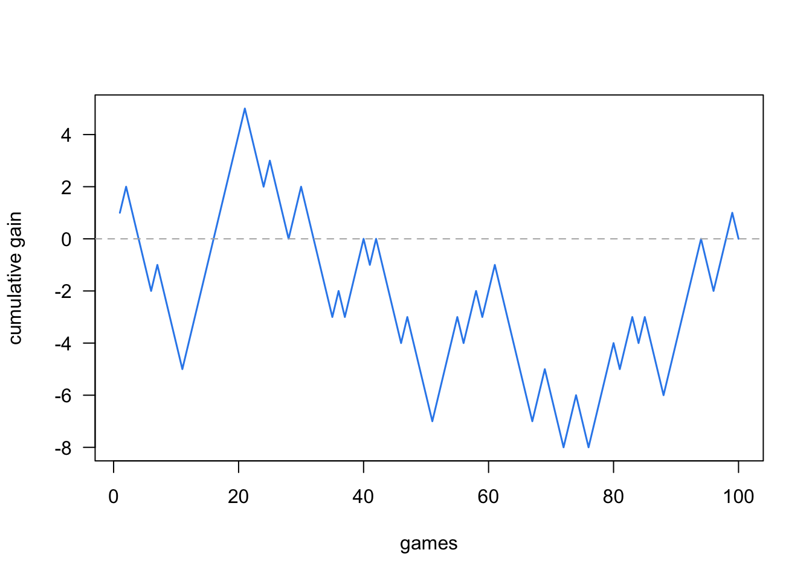
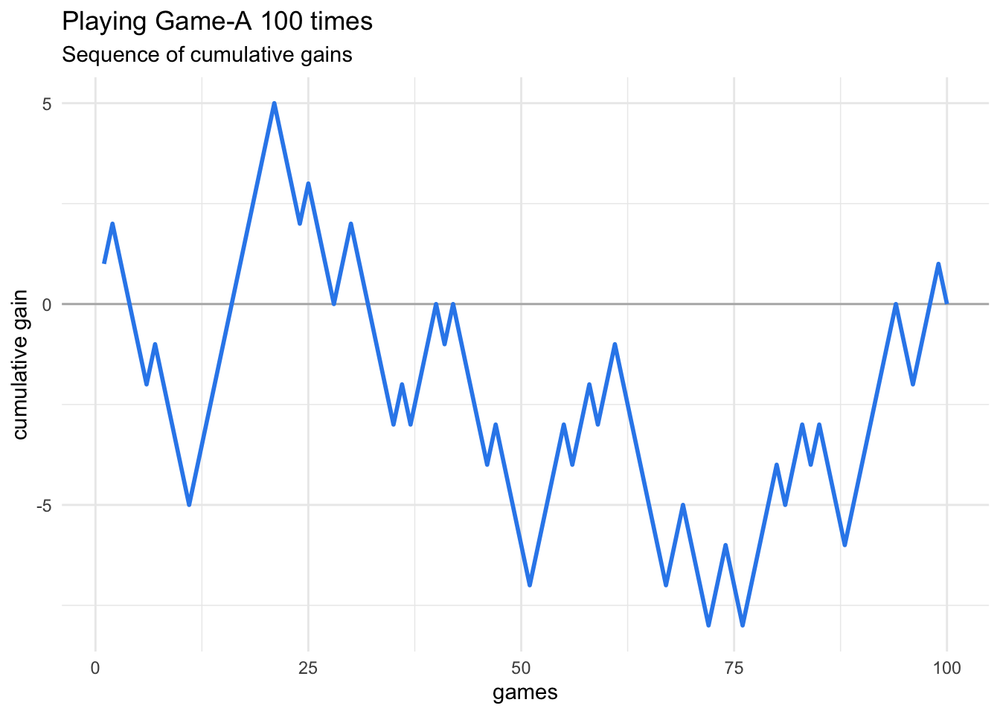
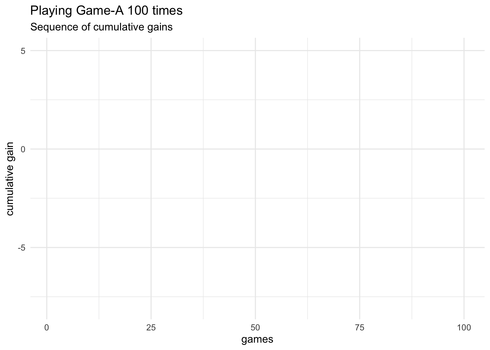

5 Playing Game-A 100 times
With all the coding elements that we have discussed so far, it’s time to play Game-A 100 times, and see what the proportion of wins turns out to be:
# random seed (for reproducibility purposes)
set.seed(753)
# main inputs
die = 1:6
number_games = 100
# initialize output matrix
games = matrix(0, nrow = number_games, ncol = 4)
# playing Game-A several times
for (game in 1:number_games) {
games[game, ] = sample(die, size = 4, replace = TRUE)
}
rownames(games) = paste0("game", 1:number_games)
colnames(games) = paste0("roll", 1:4)
# determine each game's win-or-lose output
wins = apply(
X = games,
MARGIN = 1,
FUN = function(x) any(x == 6))
# total proportion of wins
prop_wins = sum(wins) / number_games
prop_wins## [1] 0.5In this particular simulation of 100 games, we end up with a 0.5 proportion of wins. In other words, 50 percent of the games are wins, and the other 50 percent of the games are losses.
5.1 Computing Cumulative Gains
To make things more interesting, let’s assume that you are paid $1 if you win a game, but also that you pay $1 if you lose a game. That is:
gain
1if you win a gamegain
-1if you lose a game
This means that we need to create another object to store this “gains”
information. This can be done in different ways. One option is to initialize
a vector gains of length number_games, and set its elements to -1.
Then use the logical vector wins to do logical subsetting and switch to 1
the elements matching the TRUE values in wins, like this:
# vector of gains
gains = rep(-1, number_games) # initialize with all -1 elements
gains[wins] = 1 # switch to +1 for every winThe vector gains is a numeric vector containing as many 1’s as wins, and
as many -1 as losses:
table(wins)## wins
## FALSE TRUE
## 50 50More interestingly, we can use cumsum() to obtain the cumulative addition of
all elements in wins. The output vector, cumulative_gains, will contain
the sequence of cumulative gains along the 100 games.
# cumulative gains
cumulative_gains = cumsum(gains)
head(cumulative_gains, n = 10)## [1] 1 2 1 0 -1 -2 -1 -2 -3 -4As you can tell from this output, the first game is a win, as well as the
second one. But then, we get a decreasing sequence with next four elements
in cumulative_gains: 1 0 -1 -2, indicating that games 3 to 6 are
consecutive losses.
5.2 Plotting Cumulative Gains
It would be nice to visualize the sequence of wins and losses using the
vector of cumulative gains cumulative_gains. So let’s see how to get some
plots using base "graphics" functions, as well as "ggplot2" functions.
5.2.1 Cumulative Gains with plot()
Using traditional "graphics" functions, we can create a line graph with
plot(). In the x-axis we pass a sequence vector of games; as for the y-axis
we pass the cumulative_gains vector.
plot(1:number_games, cumulative_gains, type = 'l',
xlab = "games", ylab = "cumulative gain", las = 1,
lwd = 1.5, col = "#318BEC")
abline(h = 0, col = "gray70", lty = 2)
Observe where the blue line ends at game 100: exactly at a y-axis value of zero. Basically, in this series of 100 games, you didn’t gain any money, but you didn’t lose either.
5.2.2 Cumulative Gains with ggplot2
What if you prefer to make a graphic with "ggplot2" functions instead of
using the traditional base plot() approach? No problem, this is also
possible.
We are assuming that you have loaded the package "tidyverse"
which contains "ggplot2".
library(tidyverse) # which contains ggplot2To make graphics with ggplot(), we first need to assemble the data to be
plotted into a data frame. One way to create this table is as follows:
tbl = data.frame(
game = 1:number_games,
gain = gains,
cumulative_gain = cumsum(gains)
)
head(tbl)## game gain cumulative_gain
## 1 1 1 1
## 2 2 1 2
## 3 3 -1 1
## 4 4 -1 0
## 5 5 -1 -1
## 6 6 -1 -2Having the appropriate data in a data frame object tbl, we can now proceed
to make a line graph with the number game in the x-axis, and the cumulative
gain in the y-axis.
ggplot(data = tbl, aes(x = game, y = cumulative_gain)) +
geom_hline(yintercept = 0, color = "gray70") +
geom_line(color = "#318BEC", size = 1) +
labs(x = "games",
y = "cumulative gain",
title = "Playing Game-A 100 times",
subtitle = "Sequence of cumulative gains") +
theme_minimal()
5.2.3 Animated ggplot graphic
For your amusement, it is also possible to make an animated ggplot graphic.
This requires the companion package "gganimate"
library(gganimate)
# gganimate may also need:
# library(gifski) # for gif output
# library(av) # for video outputFor convenience purposes, it’s better if we assign the graphic to an object,
e.g. static_plot, and then we add a transition layer with one of the
transition_() functions. In this example we are going to use the
transition_reveal() function, specifying game as the variable in the
data tbl that needs to be taken into account to create the frames of the
animation.
# ggplot object
static_plot = ggplot(data = tbl, aes(x = game, y = cumulative_gain)) +
geom_hline(yintercept = 0, color = "gray70") +
geom_line(color = "#318BEC", size = 1) +
labs(x = "games",
y = "cumulative gain",
title = "Playing Game-A 100 times",
subtitle = "Sequence of cumulative gains") +
theme_minimal()
# animation
animated_plot = static_plot +
transition_reveal(game)
animate(animated_plot)
To save the animated plot into a gif file, you use anim_save(), for
example:
# save gif in working directory
anim_save(
filename = "Playing-Game-A-100-times.gif",
animation = animated_plot,
height = 5,
width = 7,
units = "in",
res = 200)